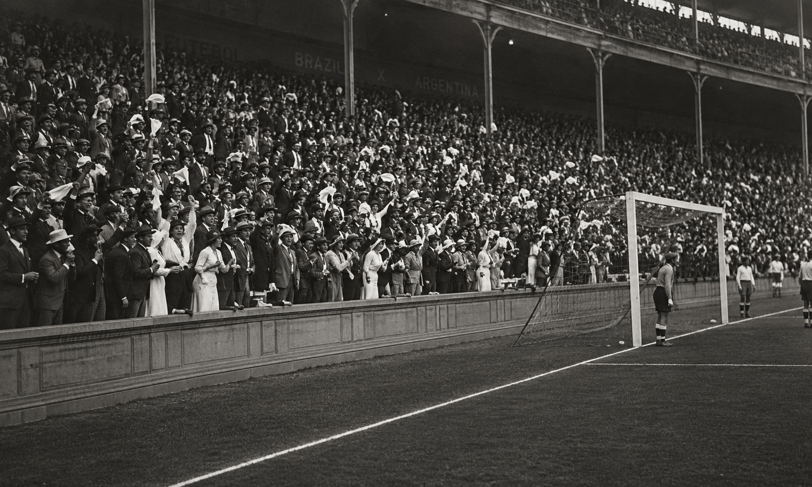

Entrega simulada
Frete grátis em pedidos acima de R$ 399,00.
Camisas, agasalhos, bandeiras e acessórios para quem carrega o Brasil no peito antes mesmo de a bola rolar.
Frete grátis em pedidos acima de R$ 399,00.
Pix, cartão ou débito em checkout educacional.
Filtre por categoria, público, marca e nome.

Em muitos lugares do mundo, quem acompanha um time é chamado de fã, supporter, adepto ou hincha. No Brasil, existe uma palavra com identidade própria: torcida.
Uma das histórias mais bonitas conta que o termo nasceu nas arquibancadas, quando mulheres acompanhavam os jogos e, tomadas pelo nervosismo, torciam lenços e luvas nas mãos. O gesto virou símbolo de emoção, ansiedade e paixão pelo jogo.
Desde então, torcer deixou de ser apenas assistir. Torcer é vibrar, sofrer, acreditar e carregar o Brasil no peito antes mesmo de a bola rolar.
Escolha seu produto, filtre por estilo e monte seu carrinho.
Uma área simulada para praticar formulário, validação e experiência de usuário no projeto.